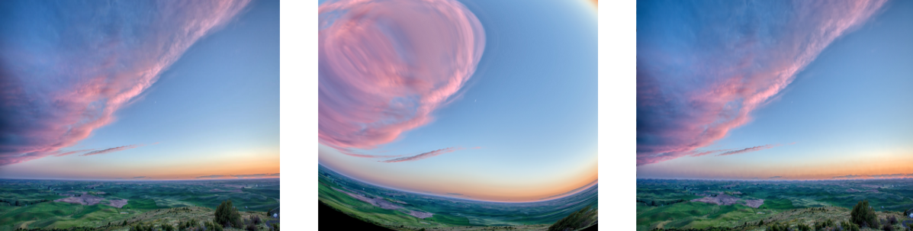
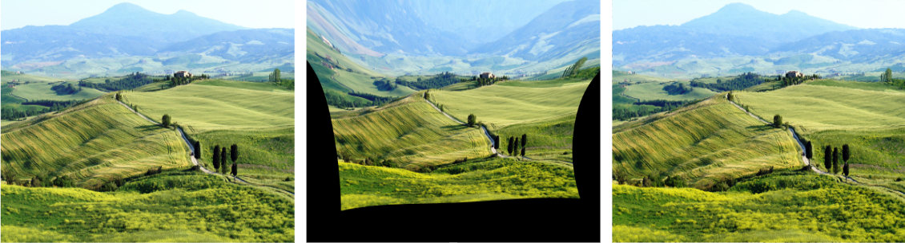
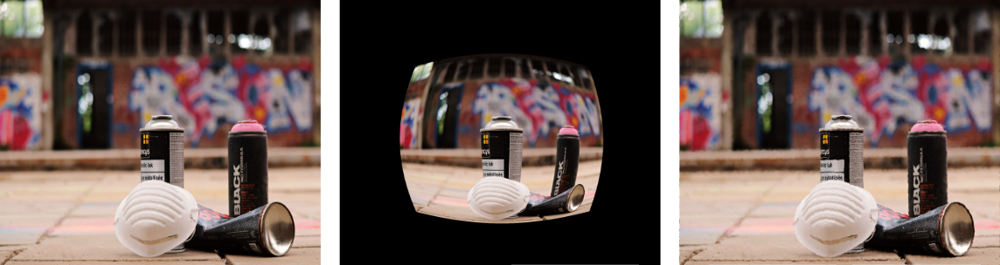

Distortion Generation and Restoration
Example 1: Original vs Distorted Image
Comparison of original image and its distorted version using our generation techniques
Example 2: Original vs Distorted Image
Another example showing the effect of our distortion generation on a different image
Example 3: Original vs Distorted Image
Final example demonstrating the range of distortions our system can generate
About the Project
This project focused on developing a comprehensive solution for complex image distortion restoration, contributing to an ICIP conference publication. The work involved creating a large-scale dataset and implementing a neural model capable of predicting and correcting various types of image distortions. The project aimed to advance the field of image restoration by providing both the tools for generating synthetic distortions and the means to restore them.
What I Learned
Through this project, I gained extensive experience in image processing and deep learning techniques. I developed expertise in implementing various distortion algorithms, including radial and vortex distortions, as well as smooth random field generation. The project enhanced my understanding of UV mapping and displacement fields, crucial concepts in image processing and computer vision.
Working with OpenCV and Perlin noise for distortion generation gave me practical experience in creating complex image transformations. I also learned about the challenges and solutions in training regression models for image restoration tasks, particularly in handling different types of distortions and evaluating model performance using various metrics.
Tools & Technologies
The project utilized a sophisticated stack of tools and technologies. OpenCV served as the primary library for implementing distortion techniques and image processing operations. We developed custom algorithms for generating radial and vortex distortions, as well as smooth random fields using Perlin noise. The UV displacement maps were carefully designed to capture the complex nature of image distortions.
For the neural network implementation, we used a ResNet-based architecture (UVNet) specifically designed for regression tasks. The model was trained using supervised learning techniques, with the generated UV displacement maps serving as ground truth data. We implemented comprehensive evaluation metrics including L1 loss, MSE, and PSNR to assess model performance.
Key Achievements
The project successfully created a large-scale dataset for complex image distortion restoration, which has been prepared for internal team use and ICIP conference submission. The UVNet model demonstrated promising results in predicting distortion fields from RGB input images, showing the potential for practical applications in image restoration.
The automated distortion pipeline we developed streamlined the process of generating synthetic datasets, making it easier for the team to create and experiment with different types of distortions. The project's contributions to the field of image restoration have been recognized through its acceptance for presentation at the ICIP conference.